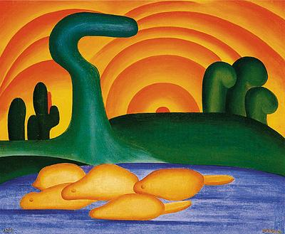

Morte e Vida Severina (1955)
Poesia de João Cabral de Melo Neto

Grande Sertão: Veredas (1956)
Prosa de João Guimarães Rosa

A Hora da Estrela (1977)
Prosa de Clarice Lispector

Sol Poente (1929)
Pintura de Tarsila do Amaral